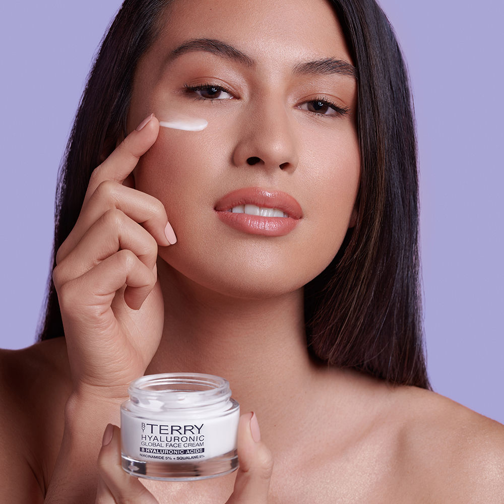

Twarz jest naszą wizytówką
Czym tak naprawdę różni się krem nawilżający od kremu przeciwzmarszczkowego albo odżywczego? Klasyczny krem nawilżający ma za zadanie przede wszystkim uchronić skórę przed utratą wilgoci, poprzez dostarczenie substancji wiążących wodę, ograniczających jej odparowywanie oraz zmiękczających naskórek. Ponieważ każdy rodzaj cery wymaga utrzymania odpowiednio wysokiego poziomu nawodnienia, każdy dobry krem jest przede wszystkim kremem nawilżającym.
Najlepszym wyborem jest zakup dwóch kosmetyków – jednego lżejszego na dzień oraz drugiego o bogatszej formule, który będziesz stosować na noc.